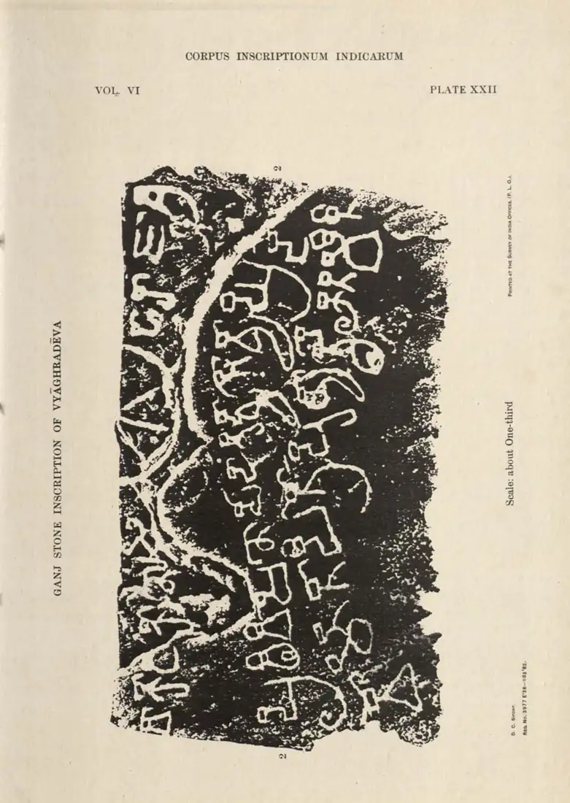

Ganj Stone Inscription of Vyāghradēva
Reading this page
p. 23 is the page number printed in the volume; PDF 391 is that page's place in the scanned PDF, the page to open in the source scan. The badge at the bottom right shows the page you are reading as you scroll: click it to show printed or PDF numbers, or both, and to jump to a page. ↑ Top takes you back to the start.
Footnotes are numbered through the article and gathered at its end: click a number in the text to read its note in place, and ↩ in the notes to come back. Plates stand where the volume binds them, at the end of the paragraph they interrupt; All plates shows them together.
No. 22: PLATE XXII
—GANJ STONE INSCRIPTION OF VYĀGHRADĒVA
THIS inscription was discovered by Mr. R. D. Banerji in 1919. It was edited for the first time with a facsimile and a translation by Dr. V. S. Sukthankar in the Epigraphia Indica, Vol. XVII, pp. 12 ff. It is edited here from the same facsimile.
The inscription is engraved on a detached slab of stone which Mr. Banerji found lying at the bottom of a ḍoñgā, adjoining a hill called Maluhā-tøngi near Ganj in the former Ajayagaḍh state, now included in Madhya Pradēsh. Close by is a ruined stone structure, probably a dam to hold the waters of the stream passing along the ḍoñgā. The findspot of the present inscription is not far removed from the ruined city of Kuṭhārā where the Nachnē-kī-talāi inscriptions were discovered1.
The present inscription is much better preserved than the preceding two records of the same king. The writing covers a space 2' 1" by 1'. As in the Nachnē-kī-talāi inscriptions, there is in the centre of the first line the figure of a wheel. The characters are of the box-headed variety of the southern alphabets, resembling closely those of the preceding two records. As observed by Sukthankar, they are unequal in size and uncouth in appearance. The language is Sanskrit and the whole record is in prose. The orthography shows the same peculiarities as in the two preceding inscriptions.
The inscription is of Vyāghradēva, who meditated on the feet of the Vākāṭaka Mahārāja Prīthivīshēna. He was evidently a feudatory of the latter. The object of the inscription is to record that Vyāghradēva did something, perhaps a dam to stem the waters of a stream, for the religious merit of his parents. As shown before, this Vyāghra was probably identical with the homonymous prince of the Uchchakalpa dynasty who flourished in circa 470-90 A.C.2 His suzerain was therefore probably the Vākāṭaka king Prīthivīshēna II.
TEXT3
TRANSLATION
Vyāghradēva, who meditates on the feet of the illustrious Prīthivīshēna (II), the Mahārāja of the Vākāṭakas, has made (this) for the religious merit of his mother and father.

Most plates in this volume carry the heading "Vol. VI" in the original printing. They belong to Vol. V (Inscriptions of the Vākāṭakas): each matches the inscription it is bound with.
Footnotes
All plates (1)
Click a plate to go to its place in the text; each plate there has links to the previous and next plate and back to this list.